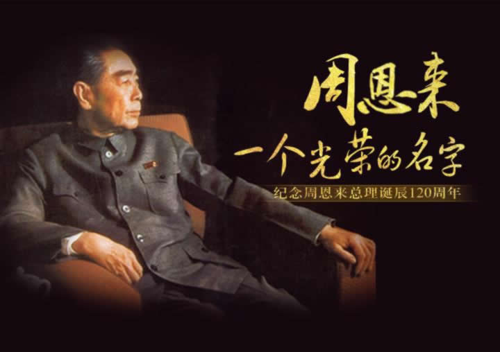

|  |
中共中央1日上午在人民大会堂举行座谈会，纪念周恩来同志诞辰120周年。中共中央总书记、国家主席、中央军委主席习近平发表重要讲话强调，新时代中国特色社会主义的航线已经明确，中华民族伟大复兴的巨轮正在乘风破浪前行。周恩来同志青年时代曾经写下这样的寄语：“愿相会于中华腾飞世界时。”今天，我们可以告慰周恩来同志等老一辈革命家的是：近代以来久经磨难的中华民族迎来了从站起来、富起来到强起来的伟大飞跃。周恩来同志生前念兹在兹的中国现代化的宏伟目标，一定能够在不远的将来完全实现。
中共中央政治局常委李克强主持座谈会，中共中央政治局常委栗战书、汪洋、王沪宁、赵乐际、韩正出席座谈会。
习近平在讲话中强调，周恩来，这是一个光荣的名字、不朽的名字。每当我们提起这个名字就感到很温暖、很自豪。周恩来同志在为中国人民谋幸福、为中华民族谋复兴、为人类进步事业而奋斗的光辉一生中建立的卓著功勋、展现的崇高风范，深深铭刻在中国各族人民心中，也深深铭刻在全世界追求和平与正义的人们心中。
习近平指出，周恩来同志半个多世纪奋斗的人生历程是中国共产党不忘初心、牢记使命历史的一个生动缩影，是新中国孕育、诞生、成长和取得崇高国际威望历史的一个生动缩影，是中国人民在自己选择的革命和建设道路上艰辛探索、不断开拓、凯歌行进历史的一个生动缩影。周恩来同志是近代以来中华民族的一颗璀璨巨星，是中国共产党人的一面不朽旗帜。周恩来同志的崇高精神、高尚品德、伟大风范，感召和哺育着一代又一代中国共产党人。周恩来同志身上展现出来的中国共产党人的崇高精神，是历史的，也是时代的，将激励我们在新时代坚持和发展中国特色社会主义征程上奋勇前进。
习近平强调，周恩来同志是不忘初心、坚守信仰的杰出楷模。理想信念是中国共产党人的政治灵魂。中国共产党能够历经挫折而不断奋起，历尽苦难而淬火成钢，归根到底在于千千万万中国共产党人心中的远大理想和革命信念始终坚定执着，始终闪耀着火热的光芒。我们要向周恩来同志学习，不要忘记我们是共产党人，不要忘记我们是革命者，任何时候都不要丧失理想信念，用自己的实际行动坚持和发展中国特色社会主义，为实现共产主义远大理想而努力奋斗。
习近平指出，周恩来同志是对党忠诚、维护大局的杰出楷模。我们要向周恩来同志学习，始终严守党的政治纪律和政治规矩，自觉维护党的团结统一，自觉在思想上政治上行动上同党中央保持高度一致，坚定执行党的政治路线，把对党忠诚、为党分忧、为党尽职、为民造福作为根本政治担当，永葆共产党人政治本色。
习近平强调，周恩来同志是热爱人民、勤政为民的杰出楷模。“人民总理爱人民，人民总理人民爱”，人民群众用朴素的语言表达了对周恩来同志最真挚的感情。我们党来自人民、植根人民、服务人民，一旦脱离群众，就会失去生命力。我们要向周恩来同志学习，坚持立党为公、执政为民，自觉践行全心全意为人民服务的根本宗旨，把党的群众路线贯彻到治国理政全部活动之中，把人民对美好生活的向往作为奋斗目标，依靠人民创造历史伟业。
习近平指出，周恩来同志是自我革命、永远奋斗的杰出楷模。我们党要始终成为马克思主义执政党，自身必须始终过硬。我们要向周恩来同志学习，更加自觉地坚定党性原则，发扬彻底的自我革命精神，不断增强党自我净化、自我完善、自我革新、自我提高的能力，不断增强本领，不断增强党的政治领导力、思想引领力、群众组织力、社会号召力，确保我们党永葆旺盛生命力和强大战斗力。
习近平强调，周恩来同志是勇于担当、鞠躬尽瘁的杰出楷模。我们要向周恩来同志学习，敢于担当责任，勇于直面矛盾，善于解决问题，以时不我待、只争朝夕的精神，以钉钉子精神落实好党的十九大作出的各项战略部署，努力创造经得起实践、人民、历史检验的实绩，无愧于时代，无愧于人民，无愧于历史。
习近平指出，周恩来同志是严于律己、清正廉洁的杰出楷模。党的作风是党的形象。我们要向周恩来同志学习，牢记手中的权力是党和人民赋予的，是用来为人民服务的，一身正气，两袖清风，自觉接受监督，敬畏人民、敬畏组织、敬畏法纪，拒腐蚀、永不沾，决不搞特权，决不以权谋私，做一个堂堂正正的共产党人。